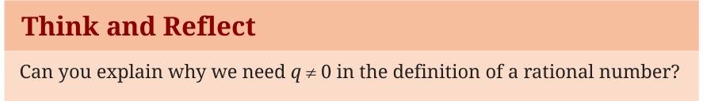

As society grew more complex, measuring became just as important as counting. If a farmer divides a field of wheat among his three children, how much does each get? If a recipe calls for half a cup of ghee, how do we represent that mathematically? Numbers that represent parts of a whole are called fractions. Just as every natural number has an additive inverse (3 has \(-3\), 19 has \(-19\), etc.), we can conceive of additive inverses for every positive fraction: \(-\frac{3}{4}\) for \(\frac{3}{4}\), \(-\frac{19}{7}\) for \(\frac{19}{7}\), etc. Let us refer to such additive inverses of positive fractions as negative fractions. Note that in a negative fraction, the '\(-\)' sign can also be placed with either the numerator or denominator, as follows: \(-\frac{1}{5} = \frac{-1}{5} = \frac{1}{-5}\).
When we combine all integers and all fractions (both positive and negative), we get the set of Rational Numbers, denoted by \(\mathbb{Q}\) (for quotient).
A rational number is defined as any number that can be expressed in the form \(\frac{p}{q}\), where \(p\) and \(q\) are integers and \(q \ne 0\).
Think and Reflect
Can you explain why we need \(q \ne 0\) in the definition of a rational number?

We must make some important observations at this stage.
- All rational numbers can be written in the form \(\frac{p}{q}\), where \(p\) and \(q\) are integers and \(q \ne 0\). For example, 5 and \(-10\) can be written as \(\frac{5}{1}\) and \(\frac{-10}{1}\), respectively. What this means is that the rational numbers also include the natural numbers, whole numbers and integers.
- Rational numbers do not have a unique representation in the form \(\frac{p}{q}\), where \(p\) and \(q\) are integers and \(q \ne 0\). For example, we have \(-\frac{1}{3} = -\frac{2}{6} = -\frac{3}{9} = -\frac{10}{30} = -\frac{2026}{6078}\) and so on. These are equivalent rational numbers (or equivalent fractions). This fact allows us to freely divide any common factor between the numerator and the denominator of a given fraction. The resulting fraction is then equivalent to the original one. For example, \(\frac{12}{30}\) is equivalent to \(\frac{2}{5}\). Here, we have divided both the numerator and the denominator by 6.
- The common understanding is that when we say that \(\frac{p}{q}\) is a rational number, or when we represent \(\frac{p}{q}\) on the number line, we assume that \(q \ne 0\) and that \(p\) and \(q\) have no common factors other than 1 (that is, \(p\) and \(q\) are co-prime). So, on the number line, among the infinitely many fractions equivalent to \(\frac{1}{2}\) (i.e., the fractions \(\frac{1}{2}\), \(\frac{2}{4}\), \(\frac{3}{6}\), \(\frac{6}{12}\), ..., \(\frac{1013}{2026}\), ...), we choose \(\frac{1}{2}\) to represent all of them.
As you will remember from Grades 6 and 7, Brahmagupta also gave rules for addition, subtraction, multiplication, and division of fractions. He noted that these rules also apply to both positive and negative fractions which together constitute the rational numbers. Here are the various laws:
- Equality: Two rational numbers \(\frac{a}{b}\) and \(\frac{c}{d}\) are said to be equal if \(ad = bc\).
- Addition and subtraction of two rational numbers: We first express the two rational numbers as fractions \(\frac{a}{b}\) and \(\frac{c}{b}\) with the same denominator, \(b\). Then we use the rules \(\frac{a}{b} + \frac{c}{b} = \frac{a + c}{b}\) and \(\frac{a}{b} - \frac{c}{b} = \frac{a - c}{b}\).
- Multiplication and division of two rational numbers: We use the rules \(\frac{a}{b} \times \frac{c}{d} = \frac{ac}{bd}\) provided that \(b \ne 0\), \(d \ne 0\); and \(\frac{a}{b} \div \frac{c}{d} = \frac{a}{b} \times \frac{d}{c} = \frac{ad}{bc}\) provided that \(b \ne 0\), \(d \ne 0\), \(c \ne 0\).
- With the arithmetic laws defined as above, addition and multiplication are both commutative (i.e., \(\frac{a}{b} + \frac{c}{d} = \frac{c}{d} + \frac{a}{b}\) and \(\frac{a}{b} \times \frac{c}{d} = \frac{c}{d} \times \frac{a}{b}\)), and they follow the law of distributivity: if \(p\), \(q\) and \(r\) are rational numbers, then \(p(q + r) = pq + pr\).
Rational numbers are closed under addition, subtraction, and multiplication; that is, if one adds two rational numbers, or subtracts two rational numbers, or multiplies two rational numbers, a rational number is again obtained. Rational numbers are also closed under division, provided that one does not divide by zero. That is, the quotient of two rational numbers is again a rational number, as long as one does not divide by zero.
Think and Reflect
- While adding or subtracting two rational numbers having different denominators, how will you make the denominators equal?
- Verify the distributive law for rational numbers.